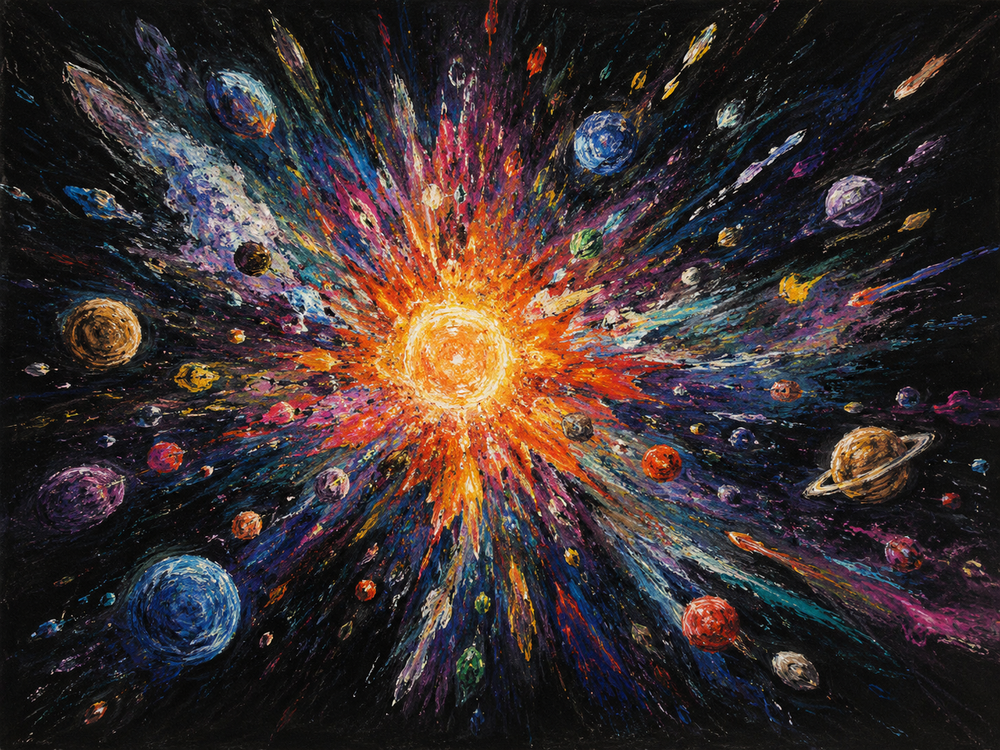

世界›日蚀
至高天宇宙 · 系列
日蚀
神祇在人间流下的传记和故事
世界观World-building
故事Lore
美术Art

日蚀的宇宙 点击展开 ⤢神 系
神祇体系
至高天遗下三位主神，彼此为敌也彼此造就。其外，尚有旧日神祇遗下的力量，以及一片不属于任何神、由人心汇成的意识之海。
☾
诺克斯
梦境 · 死亡 · 预言
漆黑而鳞片七彩的巨蛇，化作星球的月亮。执念是向旧友证明自己是对的——并最终射杀那位璀璨的日冕神祇。
☉
赛拉菲姆
日冕 · 信仰之火
以信仰为食的太阳，从不在低等生命前现身，借一颗白色巨眼「瑟拉斐」行事——时刻扫描全境、回收信仰。它的内心独白是一种冷酷的官僚口吻。
✦
艾欧斯
众生之母
三主神中的第三位，众生由她而生。其本质与意图至今几乎空白——一道尚未照亮的轮廓。
外神 · 旧日的余烬
点击展开 ›占位 · 待修改
凋零之母
被赛拉菲姆斩杀的旧日神祇。临死时她留下诅咒，遗下的「灰烬腐败」显形为一朵苍白的灰烬玫瑰——所到之处色彩褪尽、影子变薄，按灵性将生者分流。
占位 · 待修改
寒霜长者
来自宇宙深处的无名冬之神祇，曾降临法尔托外海，带来一场无法结束的冬天。神迹能钳制它、却杀不死它——唯有人类之手能终结这位长者。（此段为占位描述，待作者改写。）
意识之海
不属于任何神 · 由人心汇成
一颗巨大的球体，由无数人类的意识汇聚而成——一片没有海面、也没有海底的海洋，每一颗起落的气泡，都是一个透明、毫无秘密的人。它静默地悬在世界之外，是唯一能与太阳抗衡的力量。
深渊 · 球体的最外层
意识之海的最外层，对应着众生的潜意识——古老、粘稠、泛着紫光。它是艾萨尔之力的源头，也是被它触碰之人再难挣脱的所在。
卷 册
系列卷目
日蚀系列共享同一片世界。翻开下面的卷册，进入每一部各自的故事与设定。
第 一 部
埃登维尔追忆
点开 · 进入设定 ›
第 二 部
⸻
尚未启封
筹备中
美 术
埃登维尔风土
镀金王国的生活、建筑与节庆——神战尺度之下，那些仍在发生的人间日常。横向滑动浏览，点击查看大图。
生活

建筑

节庆